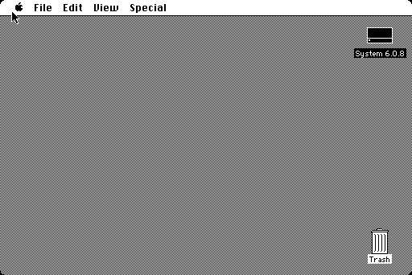
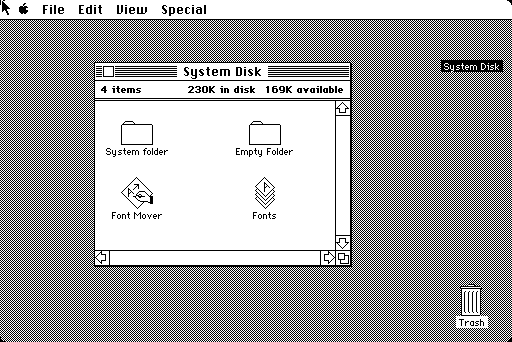
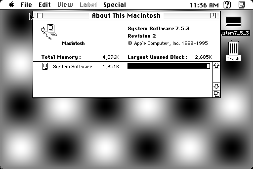
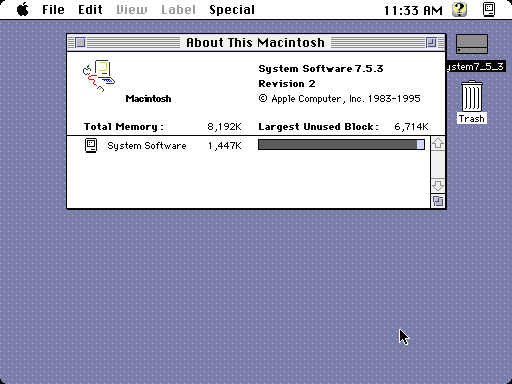
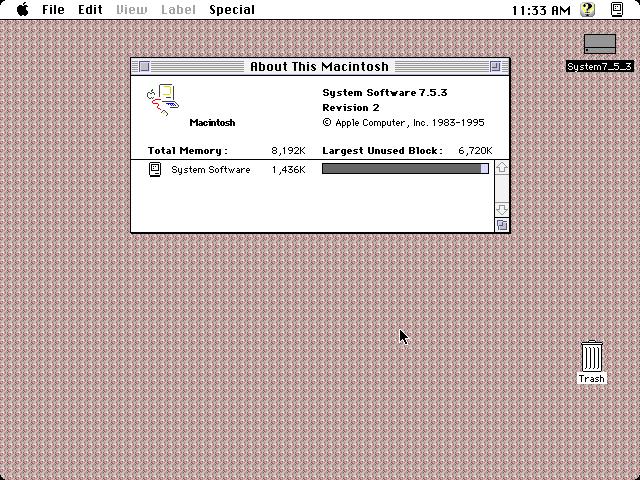
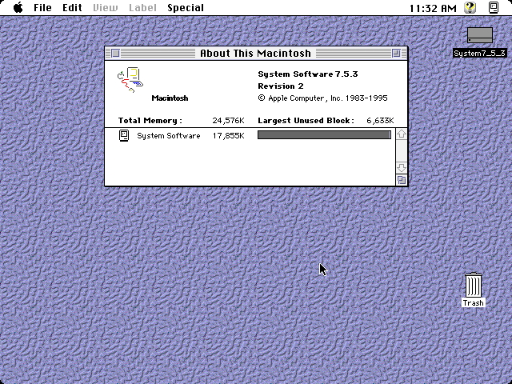
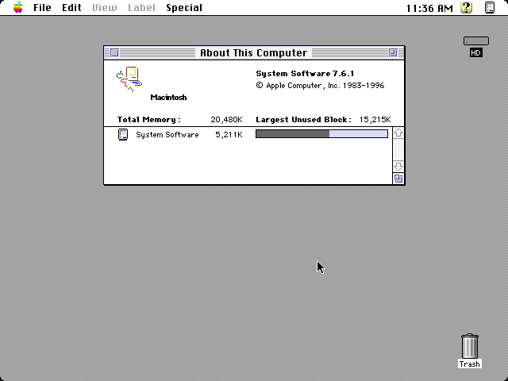
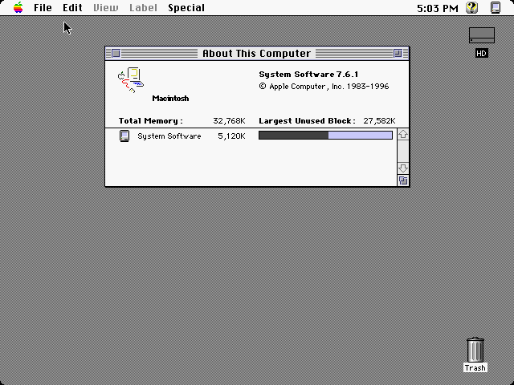
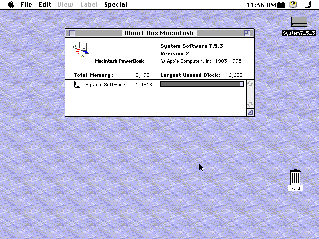
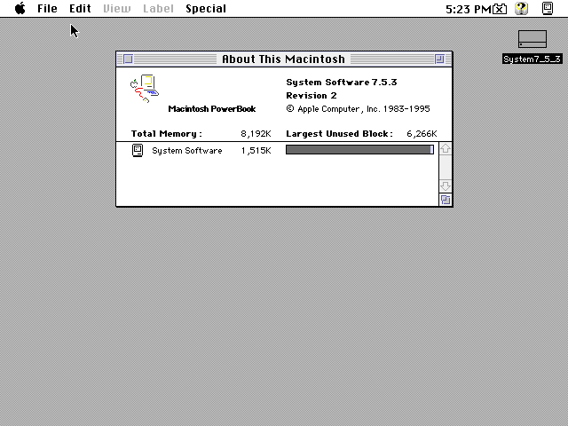

The classic Mac, back on your desk.
Chime68 is a Macintosh emulator written in Rust. It runs 51 of the 68k Macs, from the 128K to the Quadra 840AV and the PowerBook 540c, and boots everything from System 1.0 to Mac OS 8.1, with colour, sound, CDs and the Internet.
Free to download for macOS, Linux and Windows. Bring your own ROM.

- 51 MacsCompact, Mac II, LC, Quadra and PowerBook
- System 1.0 to 8.1Booted to the Finder and installed from CD
- 99.6%of the 68000 SingleStepTests, cycle counts included
- Native and webmacOS, Linux and Windows, and WebAssembly in a browser
Everything the Mac had, and a few things it didn't.
Real ROMs boot on emulated chips, so the System, its control panels and period software run as they did. Around that, Chime68 connects the Mac to the computer it's running on.
Colour and big screens
Black and white up to 256 colours on the Mac II and IIci, thousands on the LC III and the Color Classic, and millions on the Quadra. Monitors up to 1152 × 870, drawn at whole-number scales so every pixel stays sharp.
A second monitor
The Mac II, IIci and Quadra 700 take a second monitor on a card of its own, in a second window. Arrange them in the Monitors control panel and the mouse moves across both.
Sound
The startup chime, the Apple Sound Chip and the Sound Manager, and the AV Quadras' DSP3210 signal processor. The emulator is paced by your sound card, so sound never stutters or drifts.
Floppies and hard disks
400K and 800K floppy images, raw or DiskCopy 4.2, 1.44 MB floppies on SuperDrive Macs, SCSI hard disks, partitioned or bare HFS as Mini vMac uses, and the IDE disks of the Quadra 630 and PowerBook 150. Writes are saved back to the image.
CD-ROM and CD audio
ISO, Toast and BIN/CUE images in an AppleCD drive. System 7.5 and Mac OS 7.6 and 8 install CDs start the Mac up and install, and AppleCD Audio Player plays audio tracks.
Ethernet and the Internet
A built-in NAT with DHCP and DNS takes MacTCP and Open Transport online with no setup and no root. Or put Macs on a shared Ethernet for AppleShare over EtherTalk.
LocalTalk
LocalTalk over UDP, as Mini vMac does it, and a built-in bridge that routes AppleTalk to EtherTalk, so a Plus can mount a Quadra's shared disk.
Save states
One key saves the whole machine, disks and all, and another puts it back exactly as it was. Start from a saved state on the command line, too.
Clipboard, files and folders
Copy text on either side and paste on the other. Drop files on the window and they land on the Mac's desktop, or share a whole folder as a disk, resource forks and all.
Print to PDF
Choose the ImageWriter in the Chooser and print as usual. Each job becomes a PDF on your desktop.
Serial ports and a debugger
The modem and printer ports plug into a terminal, a file or a TCP connection. A debugger console with a disassembler, and a GDB stub, for looking inside.
In a web browser
Chime68 builds to WebAssembly, so the Mac runs on a web page with sound, keeping your ROM and disks in the browser's own storage. Nothing leaves the browser.
From the 128K to the Quadra.
The ROM you give Chime68 picks the Mac: it reads the ROM's checksum, names the machine, and builds that machine around it. Where one ROM serves several Macs, the setup window's Machine menu (or --model) chooses.
Compact Macs
68000 / 68030The 9" screen, from the first Mac to the Color Classic.
- Macintosh 128K, 512K and 512Ke400K and 800K floppies, System 1.0 to 6
- Macintosh Plus800K floppy and SCSI
- SE and SE FDHDThe Apple Desktop Bus, and the SuperDrive
- Macintosh ClassicSuperDrive and SCSI, on its 512 KB ROM
- Classic IIA 16 MHz 68030 with up to 10 MB
- Color ClassicIts own 512 × 384 colour screen, up to thousands of colours
Mac II family
68020 / 68030Colour, NuBus, and System 7's virtual memory and 32-bit addressing.
- Macintosh II and II FDHD68020 and 68881 at 15.67 MHz, 256 colours on a NuBus card
- IIx, IIcx and SE/3068030 and 68882; the SE/30 in black and white, with Ethernet
- IIci and IIsiBuilt-in video up to 256 colours; the IIci takes Apple's cache card
- IIfx40 MHz, with the SCC and SWIM behind I/O processors
- IIvx and IIviVASP video and the Enhanced ASC
LCs
68020 / 68030 / 68040Apple's low-cost colour Macs, with Egret or Cuda keeping the clock and running ADB.
- LC and LC IIV8's 24-bit machine, 4 to 10 MB
- LC III25 MHz, up to 36 MB, thousands of colours
- LC 475The Quadra 605 with a 68LC040
- LC 630 and LC 580The Quadra 630, with an IDE hard disk
Quadras and Centrises
68040The 68040 with its MMU and FPU, DAFB video up to millions of colours, and built-in Ethernet.
- Quadra 700, 900 and 95013" to 21" monitors; the 900 and 950 with Egret and I/O processors running Apple's own 65C02 firmware
- Quadra 800, 650 and 610, Centris 650 and 61020 to 33 MHz, up to 136 MB
- Quadra 605A cut-down Quadra with Cuda
- Quadra 63033 MHz, Valkyrie video, and an internal IDE disk
- Quadra 840AV and 660AV40 and 25 MHz, Civic video up to millions of colours, MACE Ethernet, and the DSP3210 playing the System's sounds
PowerBooks
68000 / 68030 / 68040The LCDs, the power manager with sleep and the battery, the keyboard and trackball.
- Macintosh Portable and PowerBook 10068000, with an active-matrix LCD
- PowerBook 140, 170, 160 and 180640 × 400, in 16 grays on the 160 and 180
- PowerBook Duo 210, 230, 250 and 270cThe Duos, the 270c in colour
- PowerBook Duo 280 and 280c68040 at 33 MHz
- PowerBook 150A Duo inside, with a 640 × 480 LCD and an IDE disk
- PowerBook 540c68LC040 at 33 MHz, a 640 × 480 colour LCD, Ethernet and smart batteries
System 1.0 through Mac OS 8.1.
Each one boots to the Finder on the Macs that ran it. The newer ones start up from their own install CDs and install onto a hard disk image.
System 1.0 to 6.0.8
The 128K, 512K and 512Ke, Plus, SE, Classic, Mac II, SE/30 and IIci
System 7.5
Every Mac from the Plus on: the Mac IIs, LCs, Quadras and PowerBooks
Mac OS 7.6.1
IIci, the Quadras, and the Quadra 630 from its IDE disk
Mac OS 8.0 and 8.1
Quadra 700 and 840AV
Period software runs too: MacPaint, Lemmings in black and white and in colour, HyperCard, and Internet Explorer on Mac OS 8.1, browsing the web over plain HTTP.











Download it and boot.
Download
Version 0.89.1, ready-made for macOS, Linux and Windows. On a Mac, Chime68.app runs on Apple silicon and Intel: unzip it, put it in Applications and double-click it.
The Mac builds are signed and notarized by Apple, so macOS opens them without any extra steps.
- Chime68.appmacOS, Apple silicon and Intel
- chime68macOS command line, Apple silicon
- chime68macOS command line, Intel
- chime68Linux, x86-64
- chime68.exeWindows, x86-64
Check your download
Each build is listed in the checksums file with its SHA-256. To check one, put it next to SHA256SUMS and run:
shasum -a 256 -c SHA256SUMS --ignore-missingOn Linux, use sha256sum instead of shasum -a 256. On Windows, certutil -hashfile followed by the file name and SHA256 prints the hash to compare.
Pick a ROM, pick a disk, Start.
The setup window
Open Chime68.app, or run chime68 with no arguments. Choose the ROM (which picks the Mac), memory, a floppy, SCSI disks and a CD, or drop the files on the window. Set the speed, sound and ports, then click Start.
Quitting the Mac brings you back to it, and it remembers the last setup.
The command line
chime68 --rom MacPlus.rom --scsi System608.dskThe startup chime plays, the memory test runs fast, and the Finder comes up in a few seconds. Drop more disk images on the window to mount them. --cd, --folder, --internet, --printer pdf and the rest are in the README.
Keys
- F5 / Shift-F5Save the state / restore it
- F8Eject the floppy
- Shift-F9Press the reset button
- F10Next speed: 1x, 2x, 4x, 8x, max
- F11Full screen on and off
- F12Current speed or max
- Command-Control-QQuit
- Command, OptionCommand or Control, Option or Alt
Choose Shut Down on the Mac before you quit, as you would on the real one.
Bring your own ROM.
Chime68 doesn't come with any ROMs.
A Mac's ROM is Apple's copyright, so you supply your own: dump the one in a Mac you own, or use a dump you are entitled to. Chime68 doesn't ship any, and this site doesn't link to any. System software and applications are yours to bring, too.
| ROM | Runs as |
|---|---|
Macintosh 128K and 512K, 28BA61CE or 28BA4E50 | 128K, 512K |
| Macintosh Plus, 128 KB (v1, v2 or v3) | Plus or 512Ke |
| Macintosh SE and SE FDHD, 256 KB | SE, SE FDHD |
Macintosh Classic, A49F9914 | Classic |
Macintosh II, 97851DB6 or 9779D2C4 | Macintosh II |
II FDHD, IIx and IIcx, 97221136 | II FDHD, IIx, IIcx or SE/30 |
IIci, 368CADFE | IIci |
IIsi, 36B7FB6C | IIsi |
IIfx, 4147DD77 | IIfx |
IIvx and IIvi, 4957EB49 | IIvx or IIvi |
LC, 350EACF0; LC II, 35C28F5F | LC, LC II |
Classic II, 3193670E; Color Classic, ECD99DC0 | Classic II, Color Classic |
LC III, ECBBC41C or EC904829 | LC III |
Quadra 700 and 900, PowerBook 140 and 170, 420DBFF3 | Quadra 700 or 900, PowerBook 140 or 170 |
Quadra 950, 3DC27823 | Quadra 950 |
Quadra 800, 650, 610 and Centris 650, 610, F1ACAD13 or F1A6F343 | Any of the five |
Quadra 605 and LC 475, FF7439EE | Quadra 605 or LC 475 |
Quadra and LC 630, 06684214; LC 580, 064DC91D | Quadra 630, LC 630, LC 580 |
Quadra 840AV and 660AV, 5BF10FD1 (2 MB) | Quadra 840AV or 660AV |
Macintosh Portable, 96CA3846; PowerBook 100, 96645F9C | Portable, PowerBook 100 |
PowerBook 160 and 180, E33B2724 | PowerBook 160 or 180 |
PowerBook Duo 210, 230 and 250, ECFA989B; 270c, 0024D346; 280 and 280c, 015621D7 | The Duos |
PowerBook 150, FDA22562 | PowerBook 150 |
PowerBook 520, 520c, 540 and 540c, B6909089 (2 MB) | PowerBook 540c |
Disks can be floppy images, hard disk images, or a blank file of zeros that the Finder initializes: mkfile -n 40m blank.img on a Mac, or truncate -s 40M blank.img elsewhere.
The same Mac, on a web page.
Chime68 also builds to WebAssembly. Your ROM and disks stay in the browser's storage for the next visit, and what the Mac writes is saved back to the browser's copies. The browser build has no networking, serial ports, printer, debugger or save states.
scripts/build-web.sh
python3 -m http.server -d target/web 8068Then open http://localhost:8068, pick a ROM and disk images, choose the machine and memory, and Start.